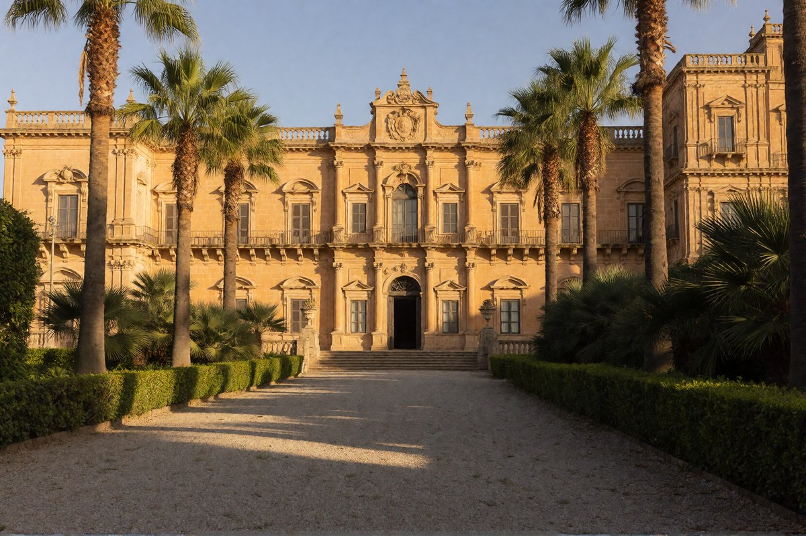

Sicilia · 20 novembre 2026
Schifani sulla corsa alla Regione: «Parlarne adesso è fuori luogo»

Il presidente della Regione siciliana risponde a chi dentro il centrodestra discute già del suo successore. Mulè si dice sereno, De Luca parla di nome bruciato e Fratelli d'Italia frena.
di Franco Zanghì
Renato Schifani non ci sta. Il presidente della Regione siciliana dice che parlare adesso del candidato alla sua successione è fuori luogo, e senza precedenti.
Il contesto è quello raccontato su questo sito il 19 novembre: Forza Italia rivendica la scelta del prossimo candidato del centrodestra alla presidenza della Regione, e in prima fila c'è Giorgio Mulè, vicepresidente della Camera.
Le parole di Schifani
Come scrive l'ANSA, giovedì sera a Palermo, a margine del premio Innovation Island, Schifani ha risposto ai cronisti: «Mi sembra fuori luogo, a distanza di un anno dalla scadenza del mio mandato, parlare di candidature per l'elezione del presidente della Regione».
E ha aggiunto una battuta: allora, dice, dovrebbe stupirsi che non si cominci già a parlare del futuro presidente della Repubblica. «Questo metodo mi sembra molto strano, anche perché non ha precedenti».
La partita è quella per Palazzo d'Orléans, sede della presidenza della Regione. Si vota nel 2027.
Mulè: «Non sono bruciato»
Poche ore prima, sempre a Palermo, a Villa Niscemi, aveva parlato proprio Mulè. Alla domanda se il suo nome fosse stato bruciato ha risposto, come riporta l'ANSA: «No, non ritengo di essere bruciato, assolutamente no». E si è detto sereno come prima.
Bruciato è la parola usata da Cateno De Luca. In un'intervista a LiveSicilia il leader di Sud chiama Nord sostiene che qualcuno ha voluto bruciare il nome di Mulè, vittima, secondo lui, delle faide interne a Forza Italia.
Il freno di Fratelli d'Italia
Frena anche l'alleato più grande. Giorgio Assenza, capogruppo di Fratelli d'Italia all'Assemblea regionale siciliana, in un'intervista ripresa da LiveSicilia dice che non c'è stata nessuna decisione finale sulla candidatura di Mulè. E aggiunge che Schifani ha governato bene.
Dove siamo
Il quadro, allo stato, è questo: Forza Italia rivendica il candidato del centrodestra e il nome più forte è quello di Mulè; Schifani dice che è presto e che il metodo non ha precedenti; Mulè dice di non essere bruciato; Fratelli d'Italia non conferma nulla.
La partita resta aperta, e si gioca dentro la coalizione prima che davanti agli elettori. Chi rivendica un nome a un anno dalla scadenza, del resto, lo fa sapendo che quel nome verrà messo alla prova dagli alleati prima che dalle urne.
Fonti
- ANSA, le dichiarazioni di Renato Schifani a margine del premio Innovation Island e quelle di Giorgio Mulè a Villa Niscemi, 19 e 20 novembre 2026
- LiveSicilia, l'intervista a Cateno De Luca e quella a Giorgio Assenza
- La Sicilia, «Schifani iperattivo, altro che dimesso. Ma gli alleati stanno sondando l'ipotesi Mulè»
- Balarm, «Accordo Meloni-Tajani in Sicilia: Mulè verso la candidatura alla Regione, ma la Lega frena»
- LiveSicilia, «Regionali, assalto al palazzo: personaggi e interpreti»
Nessuna candidatura è stata formalizzata: le posizioni riportate sono dichiarazioni politiche rese alla stampa e non decisioni degli organi dei partiti.